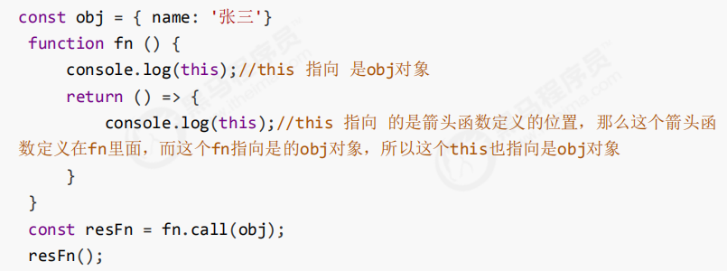
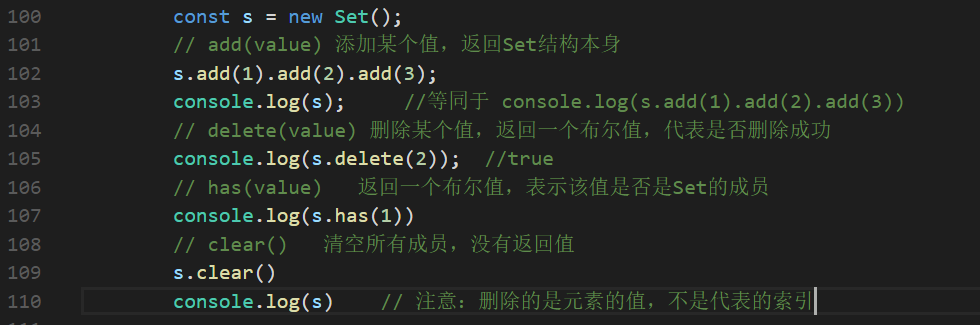

原文连接:https://www.cnblogs.com/wsuyi/p/11483126.html
1.什么是ES6？
ES的全称是ECMAScript，ES6就是ES2016之后的一个泛称，是由ECMA国际标准化组织制定的一项脚本语言的标准化规范。
2.ES6新增语法
1. let
ES6中新增的用于声明变量的关键字
特点：
1.let声明的变量具有块级作用域的特点，只在所处的块级作用域有效
if(true) {
let a = 10;
}
console.log(a); // a is not defined
2.不存在变量提升
console.log(a)； //a is not defined
let a = 10；
3.暂时性死区
利用let声明的变量会绑定在当前作用域，哪怕当前作用域外有相同变量名，也不会受影响。
2.const
声明常量，常量就是值(内存地址)不能变化的量。
特点：
1.具有块级作用域的特点
if(true) {
const a = 10;
}
console.log(a); // a is not defined
2. 声明常量时必须赋值
const p; //Missing initializer in const declaration
不赋值则会报错
3. 常量赋值后，值不能修改


1 const p = 3;
2 p = 100; //Assignment to constant variable.
3
4
5 const arr = [10,20];
6
7 arr[0] = 'a';
8
9 arr[1] = 'b';
10
11 console.log(arr); //["a","b"];
12
13 //直接给数组重新赋值则会报错
14 arr = ["a","b"] //Assignment to constant variable.常量不能重新进行赋值，如果是基本数据类型，不能更改值，如果是复杂数据类型，不能更改地址值。
3.解构赋值
在ES6中允许从数组中提取值，按照对应位置，对变量赋值，对象也可以实现解构
1.数组解构
let[a,b,c] = [1,2,3];
console.log(a,b,c); //输出结果 1 2 3
如果解构不成功，变量的值是undefined
2.对象解构
let person = {name:'书记',age:22};
let{name, age} = person;
console.log(name,age) // 输出结果 '书记' 22
let {name: myName, age: myAge} = person; // myName myAge 属于别名
console.log(myName); // 'zhangsan'
console.log(myAge); // 20
小结：
解构赋值就是把数据结构分解，然后给变量进行赋值
如果解构不成功，变量跟数值个数不匹配的时候，变量的值为undefined
数组解构用中括号包裹，多个变量用逗号隔开，对象解构用花括号包裹，多个变量用逗号隔开
利用解构赋值能够让我们方便的去取对象中的属性和方法
4.箭头函数
ES6新增的定义函数的方式
() => {} //()代表函数，=>必须要给的符号，指向那一块代码 {}函数体
const fn() => {} //代表把一个函数赋值给fn
特点：
1.如果函数体只有一句代码，且代码的执行结果就是返回值，可以省略大括号
function fn(n1,n2){
return n1 + n2;
}
//ES6箭头函数写法
const fn = (n1,n2)=>n1 +n2;2.如果形参只有一个，可以省略小括号
function fn(num){
return num;
}
//ES6箭头函数写法
const fn = num => num;3. 箭头函数不绑定this，箭头函数中的this指向的是函数定义位置的上下文this

5.剩余函数
在不知道有多少个参数的时候使用，允许我们将一个不定数量的参数表示为一个数组，不定参数定义方式，这种方式很方便的去声明一个不知道参数情况下的一个函数
function sum (first,...args){
console.log(first); // 10
console.log(args); // [20,30]
}
sum(10,20,30);剩余参数和解构配合使用
let uname = ['andy','tony','tommy'];
let [s1,...s2] = uname;
console.log(s1); //'andy'
console.log(s2); //['tony','tommy']
3.ES6内置对象扩展
Array的扩展方法
1.扩展运算符：可以将数组或对象转为用逗号隔开的参数序列
let arr = [1,2,3];
...arr;
console.log(...arr); //1 2 3
console.log(1,2,3) //1 2 3可以用于合并数组，也可以将伪数组或可遍历对象转换为真正的数组
// 合并数组
// 方法一
let ary1 = [1, 2, 3];
let ary2 = [3, 4, 5];
let ary3 = [...ary1, ...ary2];
console.log(ary3); //[1,2,3,3,4,5]
//方法二
ary1.push(...ary2);
console.log(ary1) //[1,2,3,3,4,5]
// 转为真的数组
var divs = document.querySelectorAll('div');
divs = [...divs];
console.log(divs)；构造函数方法 Array.from()
将伪数组或可遍历对象转换为真正的数组
let obj = {
'0': "a",
'1': "b",
'2': "c",
length : 3
};
let arr = Array.form(obj);
console.log(arr); //["a","b","c"]方法还可以接受第二个参数，作用类似于数组的map方法，用来对每个元素进行处理，将处理后的值放入返回的数组
let arrayLike = {
"0": 1,
"1": 2,
"length": 2
}
let newAry = Array.from(arrayLike, item => item *2)
console.log(newAry) //[2,4]
// 如果是对象，那么属性需要写对应的索引
find() :用于找出数组里第一个符合条件的元素对象，没有找到则返回undefined
let arr = [{
id: 1,
name : 'andy'
},{
id : 2,
name: 'tom'
}];
let result = arr.find((item, index) => item.id == 2) ////找数组里面符合条件 的值，当数组中元素id等于2的查找出来，注意，只会匹配第一个
findIndex()：用于找出数组里第一个符合条件的元素的位置，返回的是符合条件的元素的索引号，如果没有找到返回-1
let arr = [1, 2, 3, 4, 5];
let result = arr.findIndex((value,index) => { return value > 4 });
console.log(result); // 4includes(): 判断某个数组是否包含给定的值，返回布尔值
let arr = [1,2,3,4];
console.log(arr.includes('a')); // false
console.log(arr.includes(2)); // truestring的扩展方法
ES6中新增的创建字符串的方式，使用反引号定义
let str = `hello world`;
特点：
1.模板字符串中可以解析变量 （ 用${变量名}包裹变量名 ）
let name = `王书记`;
let sayHello = `你好，我的名字叫${name}`;
console.log(sayHello); // 你好，我的名字叫王书记2.模板字符串里可以换行
let result = {
name : '张三',
age : 22,
sex : '男'
}
let str = `
<div>${result.name}</div>
<div>${result.age}</div>
<div>${result.sex}</div>
`;
console.log(str); 3. 在模板字符串中可以调用函数
function fn(){
return `我亚索真的很快乐`
};
let str = `${fn()},你相信我`;
console.log(str); //我亚索真的很快乐,你相信我方法：
startsWith()和endsWith()方法
startsWith() 表示参数字符串是否在原字符串的头部，返回布尔值
endsWith() 表示参数字符串是否在原字符串的尾部，返回布尔值
let str1 = `Hello World`;
console.log(str1.startsWith('H')); // true
console.log(str1.endsWith('d')); // truerepeat(n) 方法：表示将字符串重复n次，返回一个新的字符串
let str2 = 'panpan';
let newStr = str2.repeat(3);
console.log(newStr); //panpanpanpanpanpan
Set数据结构
类似数组，但是成员的值都是唯一的，没有重复的值
Set本身是一个构造函数，用来生成 Set 数据结构
const s = new Set();
Set函数可以接收一个数组作为参数，用来初始化
const s = new Set([1,2,3,4]); // {1,2,3,4}
方法：

遍历：
Set结构的实例和数组一样，也拥有forEach方法，用于对每个成员执行某种操作，没有返回值
语法：s.forEach( (value) => {console.log(value)}) 打印每一个成员值